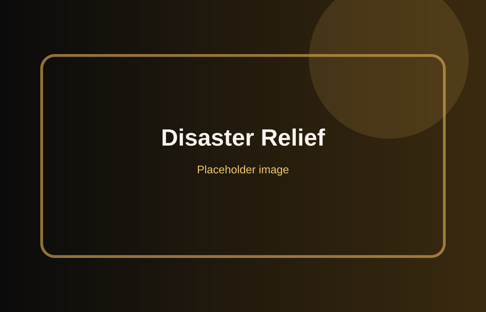
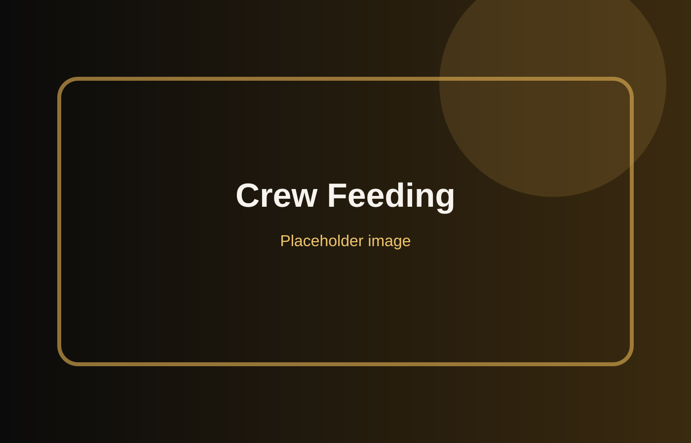
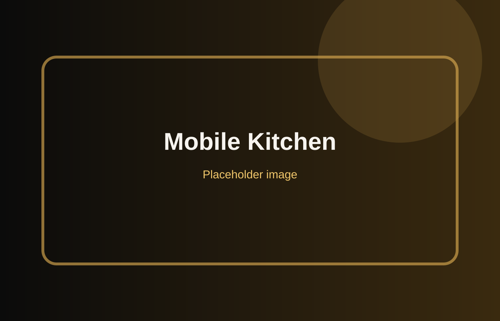

Rapid-response logistics built for speed, scale, and reliability.
Continuous workforce meal support for extended operations.
Community support and outreach through food service partnership.
Event support in Miami, Florida.
FEMA contractor support and rapid field meal service.
Emergency response support for Champlain Towers South collapse.


